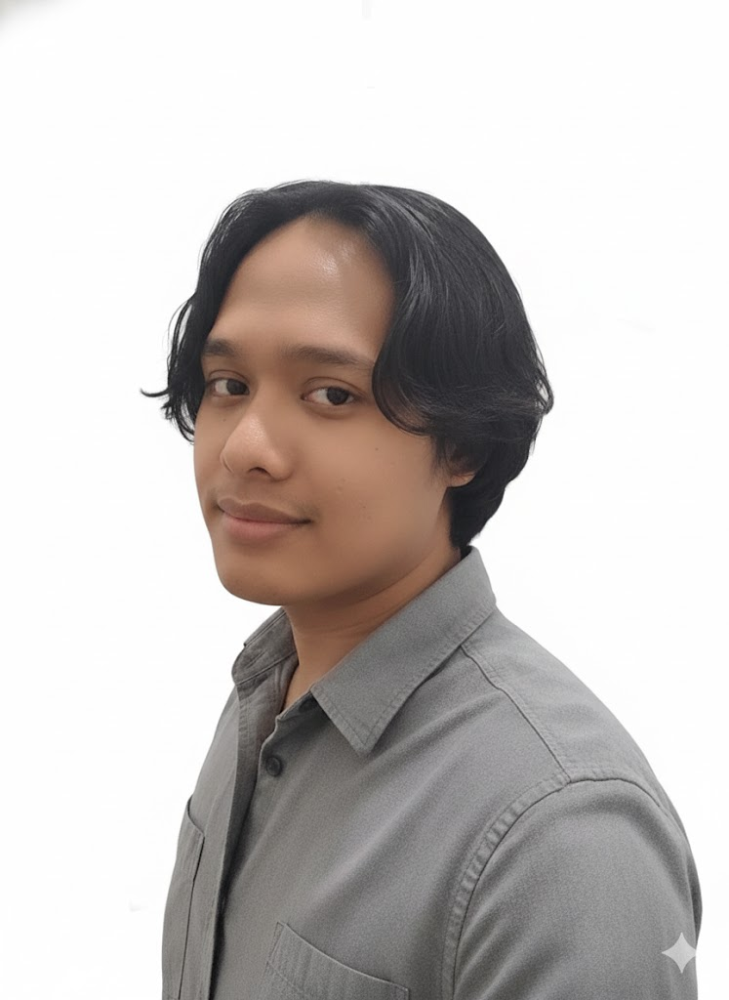

Computer Science graduate with hands-on data impact at Telkom Indonesia—where I lifted Vertex AI RAG answer accuracy from 61% to 88% for OSS BKPM, built a 5-criteria LLM-as-a-Judge framework for Sekretariat Negara, modeled an 18-entity enterprise registry with SQL pipelines, and shipped Looker Studio quality dashboards. Proven across the full data stack, from clustering 300,000+ national survey records at BPS RI to engineering tested data pipelines and analytics on 13.3M+ records.
Bachelor of Computer Science | GPA: 3.60 / 4.00
Bandar Lampung, Indonesia
Thesis: Implementation of a CRNN with BiLSTM for Speech Emotion Recognition
Telkom Indonesia — Jakarta, Indonesia
December 2025 – June 2026
Badan Pusat Statistik RI (Statistics Indonesia) — Jakarta, Indonesia
June 2024 – August 2024
University of Lampung — Bandar Lampung, Indonesia
August 2023 – June 2024
Courses: Artificial Intelligence, Declarative Programming, Computer Networks